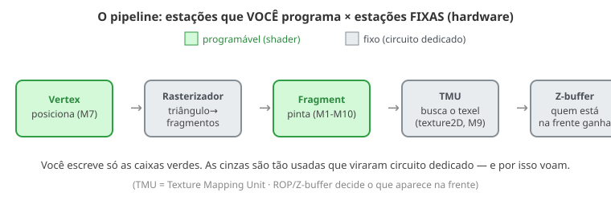

← Mapa do curso · Marco 2 · Módulo 11 de 11
Você programou o vertex (M7) e o fragment (M1–M10). Mas entre eles, e depois deles, acontece um monte de coisa que você nunca escreveu — e nem precisou. Essa parte não é shader: é hardware fixo, circuitos dedicados que fazem sempre a mesma tarefa, rápido pra caramba. Vamos conhecer a "fábrica fixa" da GPU.
Lembra a linha de montagem do M7? Agora dá pra ver quais estações você controla (verdes) e quais são automáticas (cinzas):

Entre o vertex e o fragment, alguém precisa transformar um triângulo (3 pontos) numa multidão de fragmentos (os pixels que ele cobre). Isso é a rasterização — e é hardware fixo. O playground abaixo mostra a ideia: o triângulo se move, e a GPU descobre, pixel a pixel, quais estão dentro dele. Cada quadradinho da grade é um fragmento candidato.
Quando você escreveu texture2D(u_tex, v_uv) no M9, parecia uma função sua. Mas
"buscar o pedacinho certo da imagem" é tão comum que existe um circuito só pra isso: a
TMU (Texture Mapping Unit). Essa chamada acontece de dentro do fragment shader
— enquanto ele está rodando, ele pede o texel à TMU e o hardware entrega voando. A TMU não é uma etapa
depois do fragment; é um serviço que o fragment aciona por dentro quando executa o texture2D.
Quando dois objetos se sobrepõem na tela, quem aparece? O mais perto da câmera. Quem decide isso é o Z-buffer (também fixo): quando dois pedaços de coisas caem no mesmo pixel, o Z-buffer guarda a profundidade e deixa passar só o mais perto (o da frente) — é assim que um objeto na frente esconde o que está atrás dele. Sem o Z-buffer, o que fosse desenhado por último apareceria no topo, mesmo estando atrás.
texture2D do M9).Ligue cada termo ao seu significado (escreva a letra):
No "curso médio" você saiu do plano 2D pro 3D de verdade: desenhou uma malha e entendeu o
pipeline (M7), ganhou as ferramentas de vetor e dot (M8), vestiu objetos com texturas
(M9), acendeu luz neles (M10) — e agora sabe que metade do trabalho é feita por hardware fixo
velocíssimo (M11). Você construiu um objeto 3D texturizado e iluminado, do zero,
rodando na GPU. 🎉
O Marco 3 (curso longo) vai além: brilho especular, a GPU como calculadora paralela gigante (compute), e os truques de otimização por dentro.
← Anterior: Normais & Luz Difusa · Próximo: Luz Especular & Brilho →